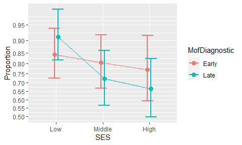
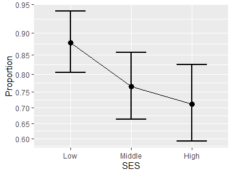

The library ANOPA provides easy-to-use tools to analyze proportions . With it, you can examine if proportions are significantly different (show an effect). In the case where there is more than one factor, you can also test if the interaction(s) are significant. You can also test simple effects (a.k.a. expected marginal analysis), as well as post-hoc tests (using Tukey’s Honestly Significant Difference test HSD). Finally, you can assess differences based on orthogonal contrasts. You can consult Laurencelle & Cousineau (2023) for details.
ANOPA also comes (a) with tools to make a plot of the proportions along with 95% confidence intervals [these intervals are adjusted for pair- wise comparisons; Cousineau, Goulet, & Harding (2021)]; (b) with tools to compute statistical power given some a priori expected proportions or sample size to reach a certain statistical power; (c) to generate random proportions if you wish to perform Monte Carlo simulations on proportions. In sum, eveything you need to analyse proportions!
The main function is anopa() which returns an omnibus analysis of the proportions for the factors given. For example, if you have a data frame ArticleExample2 which contains a column called s where the number of successes per group are stored, and a column called n where the group sizes are stored, then the following performs an analysis of proportions as a function of the groups based on the columns SES and MofDiagnostic:
## MS df F pvalue correction Fcorr pvalcorr
## SES 0.022242 2 6.394845 0.001670 1.004652 6.365237 0.001720
## MofDiagnostic 0.001742 1 0.500966 0.479076 1.002248 0.499842 0.479569
## SES:MofDiagnostic 0.007443 2 2.140035 0.117651 1.040875 2.055997 0.127965
## Error(between) 0.003478 InfAs the results suggest (consult the first three columns), there is a main effect of the factor SES (F(2, inf) = 6.395, p = .002). A plot of the proportions can be obtained easily with
anopaPlot(w) 
or just the main effect figure with
anopaPlot(w, ~ SES)
If the interaction had been significant, simple effects can be analyzed from the expected marginal frequencies with
#e <- emProportions(w, ~ SES | MofDiagnostic )
#summary(e)Follow-up analyses include contrasts examinations with contrastProportions(); finally, post-hoc pairwise comparisons can be obtained with posthocProportions().
Prior to running an experiment, you might consider some statistical power planning on proportions using anopaPower2N() or anopaN2Power() as long as you can anticipate the expected proportions. A convenient effect size, the f-square and eta-square can be obtained with anopaPropTofsq().
Finally, toCompiled(), toLong() and toWide() can be used to present the proportion in other formats.
Installation
The official CRAN version can be installed with
install.packages("ANOPA")
library(ANOPA)The development version 0.1.1 can be accessed through GitHub:
devtools::install_github("dcousin3/ANOPA")
library(ANOPA)Note that the package ANOPA is named using UPPERCASE letters whereas the main function anopa() is written using lowercase letters.
The library is loaded with
In sum
As seen, the library ANOPA makes it easy to analyze proportions using the same general vocabulary found in ANOVAs.
The complete documentation is available on this site.
A general introduction to the ANOPA framework underlying this library can be found at Laurencelle & Cousineau (2023).